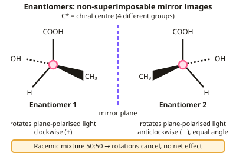

A-level Chemistry Year 13 · Topic 3
Isomerism, carbonyls and acid derivatives
Isomerism, carbonyls and acid derivatives takes organic chemistry into three dimensions and introduces some very reactive families of compounds.
We will look at optical isomers and why they matter for medicines, then the reactions of aldehydes and ketones, including nucleophilic addition.
Finally we study carboxylic acids, esters, acyl chlorides and acid anhydrides, and how they are used to make useful products.
- 3 subtopics
- 85 questions
- Free: 3.1 notes and 10 questions
In this topic
- 3.1Optical isomerismFree below · 23 questions
- 3.2Aldehydes and ketonesOpen in Full Marks · 21 questions
- 3.3Carboxylic acids and derivativesOpen in Full Marks · 41 questions
3.1 · Free notes
Optical isomerism

Key points
- Optical isomers (enantiomers) are non-superimposable mirror images, arising from a chiral centre — a carbon bonded to four different groups.
- Enantiomers have identical physical and chemical properties except their effect on plane-polarised light: one rotates it clockwise, the other anticlockwise by an equal amount.
- A racemic mixture contains equal amounts of both enantiomers and has no overall effect on plane-polarised light.
- Optical isomerism matters in drug design, since enzymes and receptors are chiral and often interact correctly with only one enantiomer.
In more detail
- Spotting a chiral centre: look for a carbon with four different groups attached, e.g. the central carbon in butan-2-ol (H, OH, CH₃, C₂H₅).
- Drawing enantiomers: draw the chiral carbon with two bonds in the plane, one wedge and one dashed bond, then draw the mirror image beside it.
- Racemic mixtures from mechanisms: nucleophilic addition to a planar C=O can attack from either side with equal probability, giving 50 : 50 of each enantiomer.
- Thalidomide: one enantiomer treated morning sickness, the other caused birth defects; and the enantiomers interconvert in the body, so even a pure sample is unsafe.
Practice
Optical isomerism: 10 questions
Pick an answer to check it, or open the answer for the explanation.
1. What is a chiral centre?
- Any carbon atom
- A carbon atom bonded to four different groups
- A carbon with a double bond
- A nitrogen atom
Show answer
B: A carbon atom bonded to four different groups. This lack of symmetry creates two possible mirror-image arrangements.
2. What is true of enantiomers' physical properties, such as boiling point?
- They are completely different
- They are identical, except for the direction they rotate plane-polarised light
- One always has a higher boiling point
- They have different molecular formulae
Show answer
B: They are identical, except for the direction they rotate plane-polarised light. Only their interaction with polarised light and with other chiral molecules differs.
3. What is a racemic mixture?
- A single pure enantiomer
- An equal mixture of both enantiomers, with no net effect on polarised light
- A mixture of different compounds
- A solid mixture only
Show answer
B: An equal mixture of both enantiomers, with no net effect on polarised light. The rotational effects of the two enantiomers cancel out.
4. Why is optical isomerism significant in drug design?
- It has no significance
- Enzymes and receptors are chiral, so only one enantiomer may be biologically active or safe
- Both enantiomers always work identically
- Only achiral drugs work
Show answer
B: Enzymes and receptors are chiral, so only one enantiomer may be biologically active or safe. One enantiomer of a drug can be effective while the other is inactive or even harmful.
5. What happens to plane-polarised light passed through a racemic mixture?
- It rotates strongly clockwise
- It rotates strongly anticlockwise
- There is no net rotation, as the effects cancel
- It is absorbed completely
Show answer
C: There is no net rotation, as the effects cancel. Equal amounts of each enantiomer produce equal and opposite rotations.
6. Which technique can distinguish between two enantiomers?
- Infrared spectroscopy
- Measuring the rotation of plane-polarised light
- Mass spectrometry
- Melting point
Show answer
B: Measuring the rotation of plane-polarised light. Their other physical properties are identical.
7. Which compound contains a chiral centre?
- Butan-2-ol
- Ethanol
- 2-methylpropan-2-ol
- Propan-2-ol
Show answer
A: Butan-2-ol. Butan-2-ol's C2 carries H, OH, CH₃ and C₂H₅, all different. Propan-2-ol and 2-methylpropan-2-ol have two identical methyl groups on the relevant carbon.
8. How many chiral centres are in 2,3-dibromopentane, CH₃CHBrCHBrCH₂CH₃?
- 3
- 2
- 1
- 0
Show answer
B: 2. C2 bonds to H, Br, CH₃ and CHBrC₂H₅; C3 bonds to H, Br, C₂H₅ and CHBrCH₃. Each carbon has four different groups, so there are two chiral centres.
9. Why does adding HCN to propanal give a racemic mixture of the hydroxynitrile?
- H⁺ attacks the carbon before CN⁻
- The planar C=O is attacked equally from either face
- The product has no chiral centre
- The reaction is reversible
Show answer
B: The planar C=O is attacked equally from either face. The carbonyl group is planar, so CN⁻ attacks from above or below with equal probability. This gives equal amounts of both enantiomers.
10. Pure enantiomer A rotates light by +8.0°. A mixture is 75% A and 25% of its mirror image B. What is the rotation?
- +6.0°
- +8.0°
- +4.0°
- 0°
Show answer
C: +4.0°. The 25% of B cancels 25% of A, leaving a 50% excess of A: 0.50 × 8.0° = +4.0°. The mixture is not racemic, so it still rotates the light.
Keep going in Full Marks
Full Marks has 23 questions on Optical isomerism (13 more than here), set out in practice levels. You also get notes and 3D models for all 3 subtopics of Isomerism, carbonyls and acid derivatives, plus games, timed exams and past papers.
On your exam board
- AQATopic 3.3.7: Optical isomerism, Topic 3.3.8: Aldehydes and ketones, Topic 3.3.9: Carboxylic acids and derivatives
- OCR ATopic 6.1.2: Carbonyl compounds, Topic 6.1.3: Carboxylic acids and esters, Topic 6.2.2: Amino acids, amides and chirality
- OCR BTopic PL: Polymers and life, Topic CD: Colour by design
- EdexcelTopic 17: Organic chemistry II
- CambridgeTopic 29: An introduction to A Level organic chemistry, Topic 33: Carboxylic acids and derivatives